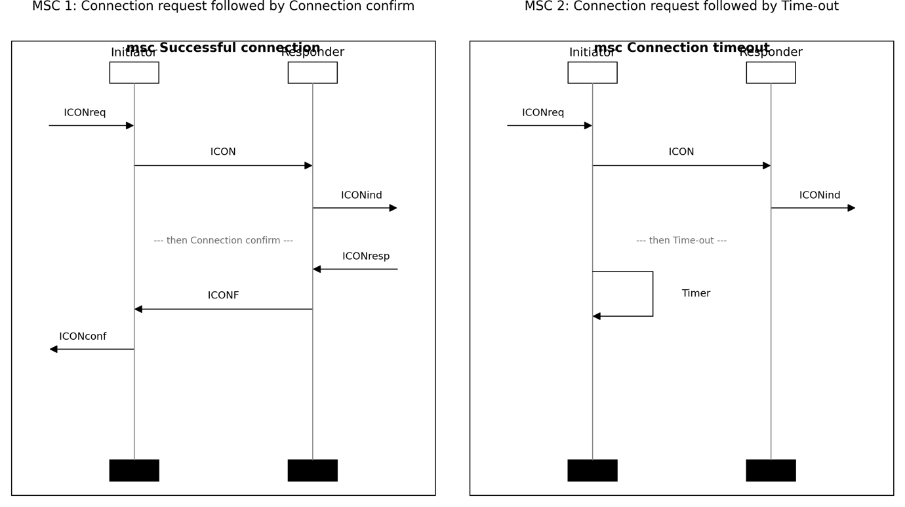

Annotations / GPT-5.4-Thinking Deep / Example 7.docx
Question: Consider the following High-Level Message Sequence Chart and
its components represented in the attached two files. Generate two MSCs
included in the semantics of the High-Level Message Sequence Chart.


Answer:
The HMSC has one initial component followed by a choice:
Connection request ;
( Connection confirm + Time-out )
So two MSCs included in its semantics are obtained by concatenating Connection request with each branch.
MSC 1 — Successful connection
This MSC corresponds to the path:
Connection request → Connection confirm
Event sequence
Initiator Responder
| |
|<-- ICONreq | external input to Initiator
| |
|---------- ICON ------------>|
| |
| |-- ICONind --> external output
| |
| |<-- ICONresp external input to Responder
|<--------- ICONF ------------|
| |
|-- ICONconf --> external output
| |
Informal trace
ICONreq ;
ICON ;
ICONind ;
ICONresp ;
ICONF ;
ICONconf
Thus the Initiator receives a connection request, sends ICON to the Responder, the Responder indicates the request, receives a response, sends ICONF back, and finally the Initiator emits ICONconf.
MSC 2 — Connection request followed by timeout
This MSC corresponds to the path:
Connection request → Time-out
Event sequence
Initiator Responder
| |
|<-- ICONreq | external input to Initiator
| |
|---------- ICON ------------>|
| |
| |-- ICONind --> external output
| |
| |
|---- Timer / timeout ----> | local timeout event on Initiator
| |
Informal trace
ICONreq ;
ICON ;
ICONind ;
Timer
Here the connection request is sent to the Responder, but instead of receiving a confirmation, the Initiator experiences a timeout.
So, the two MSCs in the semantics of the given HMSC are:
Connection request followed by Connection confirm
Connection request followed by Time-out
Please draw the two MSCs.

Task type: Composition
Judgment: Correct